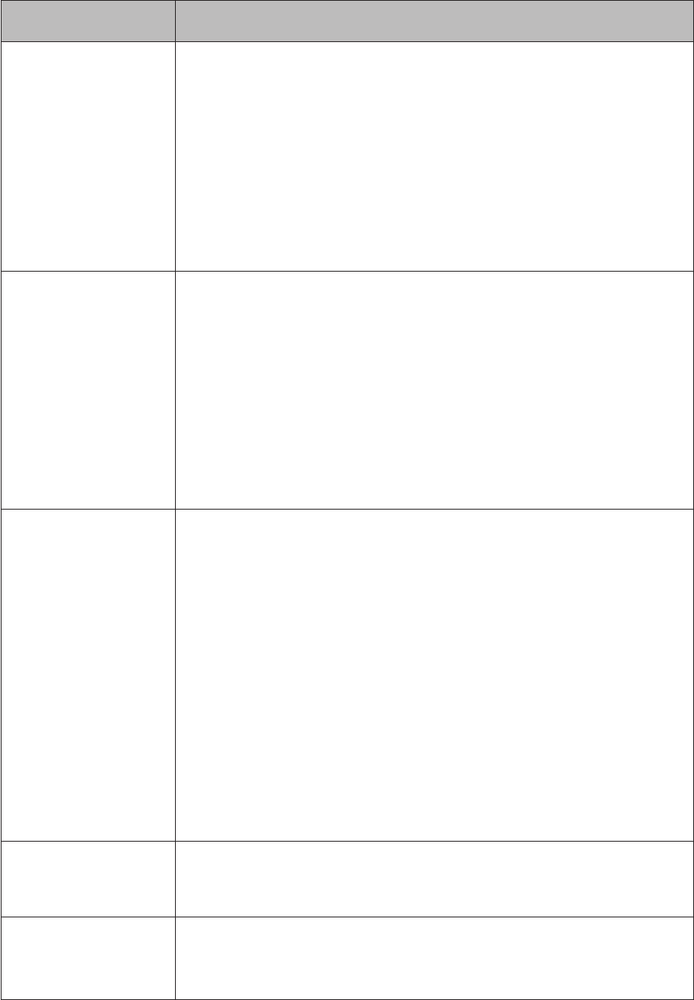

Guide d’ulisaon
1
Contenu du coret
MOVETRACK x 1 Câble USB x 1
Accessoire pour animal
domesque x 1
Tournevis x 1 Vis x 2
Guide d’ulisaon
rapide x 1
Veuillez lire ce document aenvement avant d’uliser votre
appareil.
2
Descripon de l’appareil
① ② ③
④
⑤ ⑥
①
Indicateur de baerie
②
Indicateur GPS
③
Indicateur de réseau
④
Bouton marche/arrêt
⑤
Port micro-USB
⑥
Logement de la carte Nano-SIM
Catégorie Descripon
Indicateur de
baerie
• Clignote en rouge quand l’appareil est mis en
charge
• S’allume en bleu une fois la charge terminée
• S’allume en rouge lorsque le niveau de la
baerie est faible

3
Catégorie Descripon
Indicateur GPS
• Clignote en rouge lorsque l’appareil recherche
un signal GPS.
• S’allume en bleu lorsque votre MOVETRACK a
trouvé un signal GPS.
• S’allume en rouge lorsque votre MOVETRACK
ne trouve pas de signal GPS
Indicateur de
réseau
• S’allume en bleu lorsque l’appareil est connecté
au réseau de données cellulaires.
• S’allume en rouge en l’absence de couverture
réseau. Assurez-vous que la carte Nano-SIM
est bien mise en place et que le code PIN a été
désacvé au préalable ( voir Désacvaon de
votre code PIN page 6).
Marche/Arrêt
• Appuyez une fois pour acher l’état de la
baerie/du GPS/du réseau.
• Pour mere votre MOVETRACK sous tension,
maintenez le bouton marche-arrêt appuyé
pendant au moins 3 secondes jusqu’à ce que
les 3 voyants LED s’allument en bleu.
• Pour mere votre MOVETRACK hors tension,
maintenez le bouton marche-arrêt appuyé
pendant au moins 3 secondes jusqu’à ce que
les 3 voyants LED s’allument en rouge.
Port micro-USB Pour la mise en charge
Logement de la
carte Nano-SIM
À rerer pour accéder à la carte Nano-SIM.
4
Paramétrage de votre MOVETRACK
Obtenir une carte Nano-SIM
Il est nécessaire de se procurer une carte Nano-SIM (non fournie
avec ce produit) pour paramétrer et uliser votre MOVETRACK.
Contactez votre opérateur pour lui demander une carte Nano-SIM
compable avec le réseau 2G, accompagnée d’une ore données.
Désacvaon de votre code PIN
Avant d’insérer la carte Nano-SIM dans votre MOVETRACK,
insérez-la dans un autre appareil, comme un smartphone, an de
désacver le code PIN.
****
Code PIN de la
carte SIM
conrmer
Paramètres
Sécurité
Sécurité
Verrouillage de la carte SIM
Verrouiller la carte SIM
Demander le code PIN
pour uliser le téléphone
Insérer la carte Nano-SIM
Reportez-vous aux instrucons ci-après lors de l’inseron de votre
carte Nano-SIM et assurez-vous de disposer d’une connexion
Internet.
5
Rerez le cache du logement Nano-SIM à l’aide du tournevis
fourni.
Meez en place la carte Nano-SIM.
Assurez-vous d’avoir bien désacvé le code PIN de votre carte
Nano-SIM avant de l’insérer dans votre MOVETRACK. (voir
Désacvaon de votre code PIN page 6).
Remeez en place le cache du logement Nano-SIM et serrez les
deux vis.

6
Aenon : n’essayez pas de démonter votre MOVETRACK.
Vous risqueriez d’altérer les performances d’étanchéité à l’eau du
MOVETRACK, et de ne plus pouvoir bénécier de la garane.
Mise en charge de votre
MOVETRACK
Branchez le câble micro-USB à votre MOVETRACK et connectez-
le à un chargeur USB ou à n’importe quel port USB 1A/5V.
• En cours de charge, le voyant de la baerie clignote en rouge.
• La baerie est complètement rechargée lorsque le voyant passe
au bleu. Pour une recharge complète, comptez environ 2,5 heures.
Remarque : avant une première ulisaon, rechargez votre
MOVETRACK pendant au moins 2,5 heures.
Mise sous tension de votre
MOVETRACK
Pour mere votre MOVETRACK sous tension, maintenez le bouton
marche-arrêt appuyé pendant au moins 3 secondes jusqu’à ce que
les 3 voyants LED s’allument en bleu. Les 3 voyants LED vous
renseignent sur le statut de fonconnement de votre MOVETRACK.
7
Température et mise en charge
Aenon : nous vous déconseillons d’uliser votre MOVETRACK
à des températures inférieures à -10°C ou supérieures à 45°C.
Veuillez uniquement recharger votre MOVETRACK à des
températures comprises entre 0°C et 55°C. Une mise en charge
hors de cee plage de températures annulera votre garane.
An de protéger votre MOVETRACK, il existe certaines restricons
en termes de mise en charge et d’ulisaon. Ces limitaons
dépendent de la température ambiante, comme détaillé ci-dessous :
Température
environnementale
Limitaons Température ambiante
< -20°C
Votre MOVETRACK
ne peut pas être
rechargé ou mis sous
tension.
Si le câble USB est inséré
pour la mise en charge, votre
MOVETRACK clignote
rapidement en rouge et
s’éteint automaquement.
-20°C à 0°C.
Votre MOVETRACK
ne peut pas être
rechargé.
Si le câble USB est
inséré, la mise en charge
de votre MOVETRACK
sera automaquement
interrompue, mais vous
pourrez connuer d’uliser
votre appareil.
0°C à 55°C.
Votre MOVETRACK
peut être rechargé.
Si le câble USB est inséré,
la mise en charge de votre
MOVETRACK démarre et
vous pouvez uliser votre
appareil normalement.
8
Température
environnementale
Mise en charge Excepon
56°C à 60°C.
Votre MOVETRACK
ne peut pas être
rechargé.
Si le câble USB est
inséré, la mise en charge
de votre MOVETRACK
sera automaquement
interrompue, mais vous
pourrez uliser votre
appareil normalement.
< 60°C
Votre MOVETRACK
ne peut pas être
rechargé ou mis sous
tension.
Si le câble USB est inséré
pour la mise en charge, votre
MOVETRACK clignote
rapidement en rouge et
s’éteint automaquement.
Vérier que votre MOVETRACK
est connecté au réseau
Après démarrage complet de votre MOVETRACK, appuyez sur le
bouton marche-arrêt an de vérier l’état de connexion du réseau.
Si le voyant LED est bleu, cela signie que l’appareil est parvenu à
se connecter au réseau 2G/GPRS.
Si le voyant LED est rouge, cela signie que la connexion au réseau
a échoué.
Veuillez vérier que le code PIN de votre SIM Nano a été désacvé
au préalable.
Si des erreurs persistent, veuillez faire une demande d’ore réseau
2G compable SIM Nano auprès de votre opérateur.
Connexion établie Échec de la connexion
9
Installaon de l’applicaon
L’applicaon MOVETRACK doit être installée pour pouvoir
paramétrer et uliser votre MOVETRACK. Téléchargez-la depuis
App Store ou Google Play, puis installez-la et lancez-la sur votre
smartphone.
App Store
Play Store
Créaon d’un compte
1. Appuyez sur Inscripon pour créer votre compte MOVETRACK.
10
2. Dénissez un nom d’ulisateur et un mot de passe.
3. Indiquez une adresse e-mail. Au cas où vous oublierez votre mot
de passe, un lien vous sera envoyé à cee adresse an de vous
permere de le réinialiser.
4. Au bout de quelques minutes, vous recevrez par e-mail un
code de véricaon. Saisissez-le dans l’applicaon pour pouvoir
connuer.
11
Etablir une connexion à votre
compte
Pour vous connecter, saisissez votre nom d’ulisateur et votre mot
de passe.
Procédure d’associaon
1. Appuyez sur + pour ajouter votre MOVETRACK.
12
2. Séleconnez Je veux ajouter un nouveau Traceur. Un droit
d’administrateur vous est accordé.
3. Saisissez le code IMEI pour associer votre MOVETRACK.
a. Scannez le QR code.
Scannez le QR code IMEI situé sur l’équee de l’emballage.
b. Saisissez manuellement le code IMEI.
Appuyez sur Insérer l’IMEI dans l’écran Scanner le QR code.
Entrez l’idenant unique de votre MOVETRACK (IMEI) et
13
cliquez sur Conrmer pour associer votre MOVETRACK à
votre smartphone. Le code IMEI se trouve à l’arrière de votre
MOVETRACK ou sur l’emballage de votre MOVETRACK.
(voir ci-dessous)
IMEI: XXXXXXXXXXXXXXX
4. Saisissez votre nom.
14
5. Saisissez le nom de votre Traceur.
6. Ajoutez une image de prol pour votre Traceur.
Vérier que tout fonconne
correctement
Si le MOVETRACK et le smartphone ont bien été associés,
l’applicaon apparaît sur l’écran principal de votre smartphone avec
une carte indiquant la géolocalisaon du MOVETRACK.
15
Uliser votre MOVETRACK
MOVETRACK peut vous permere de géolocaliser aussi bien vos
valises, que vos enfants ou vos animaux de compagnie.
Uliser votre accessoire pour un animal
domesque
Insérez votre MOVETRACK dans dans l’accessoire comme indiqué
ci-dessous. Alignez la fenêtre an que les 3 icônes de nocaon
soient visibles.
Remarque : Placez le MOVETRACK sur le collier de votre animal.
Allumer votre MOVETRACK
Mise sous tension/hors tension
Maintenez le bouton marche-arrêt appuyé pendant 3 secondes
pour allumer ou éteindre votre MOVETRACK.

16
Foncons de l’applicaon
MOVETRACK
Écran principal de l’applicaon
Faire glisser
vers la gauche
pour accéder
au volet de
navigaon
Masquer ou acher le menu de raccourcis
Appuyer pour actualiser la géolocalisaon de votre
MOVETRACK.
Appuyer pour acher et paramétrer les zones de
sécurité.
Appuyer pour suivre l’inéraire de votre Traceur.
Indicateur du niveau de la baerie : appuyer pour
modier les paramètres d’économies d’énergie.
Appuyer pour actualiser la géolocalisaon de votre
smartphone.
Eectuer un zoom avant et arrière sur la carte.
17
Geson ulisateur
Il est possible d’ajouter d’autres ulisateurs à l’applicaon en
scannant un QR code.
Ajout d’un ulisateur en scannant un QR code
Appuyez sur Ulisateurs dans le volet de navigaon, puis appuyez
sur + pour l’inviter.
Téléchargez et installez l’applicaon MOVETRACK sur le smartphone
du nouvel ulisateur. Créez un compte et établissez une connexion.
Appuyez sur Je souhaite suivre un Traceur et scannez le QR code
de l’applicaon de l’administrateur.
18
Les ulisateurs ajoutés via un QR code ont accès à quasiment
toutes les foncons de l’applicaon de l’administrateur, comme
la géolocalisaon du MOVETRACK. Ils ne peuvent toutefois pas
ajouter ou supprimer des ulisateurs.
Zone de sécurité
Depuis l’écran d’accueil, appuyez sur pour accéder au menu
Zone de sécurité. Vous pouvez maintenant dénir des zones
géographiques appelées zones de sécurité (par ex., votre domicile).
Une fois ces zones paramétrées, vous recevrez des nocaons
dans votre applicaon à chaque fois que l’appareil pénètre ou quie
une de ces zones sécurisées.
Paramètres d’économie d’énergie
Depuis l’écran d’accueil, appuyez sur pour accéder aux paramètres
d’économies d’énergie.
Séleconnez la fréquence de mise à jour de la géolocalisaon
(toutes les 3, 5, 15, 30 ou 60 minutes) et le mode (Précis, Normal
19
ou Manuel). Essayez de trouver un bon compromis entre précision
et autonomie de la baerie.
Historique de localisaon
Appuyez sur Paramètres, puis Historique de localisaon pour
acher les déplacements du MOVETRACK pour un jour/horaire
parculier. Indiquez la plage horaire. La carte eectue un zoom
automaque pour acher tous les emplacements enregistrés de
votre MOVETRACK. Faites un zoom vers l’avant ou vers l’arrière
pour acher une vue plus claire.
20
Mises à jour
Ulisez le menu Mise à jour pour vérier si une nouvelle version
logicielle est disponible pour votre MOVETRACK ou l’applicaon.
Appuyez sur le bouton en bas de l’écran pour vérier les mises à
jour..
FAQ
1. Les matériaux ulisés avec ce produit peuvent-ils être dangereux
pour les humains ou les animaux ?
Les matériaux ulisés ont été soumis à tous les tests de sécurité
spéciques et sont cerés être adaptés à une ulisaon
quodienne.
2. Pourquoi mon MOVETRACK ne charge-t-il pas ?
• Vériez que votre baerie n’est pas complètement déchargée.
Si la baerie est restée déchargée pendant une période
prolongée, quelques minutes peuvent s’écouler avant que
l’indicateur ne s’allume.
• Vériez que la charge s’eectue dans des condions normales
(entre 0 °C et +45 °C).
21
• À l’étranger, vériez la compabilité des prises de courant.
3. Est-il possible de passer des appels vers mon MOVETRACK ?
Votre MOVETRACK ne prend pas en charge les appels vocaux.
4. Combien d’ulisateurs peuvent-ils surveiller mon MOVETRACK
simultanément ?
10 ulisateurs peuvent surveiller votre MOVETRACK en même
temps. Vous pouvez inviter des ulisateurs en partageant le QR
code sur la page Inviter un ulisateur dans l’applicaon.
5. Comment se fait-il que je ne peux pas obtenir la posion de
mon MOVETRACK ?
• Vériez que votre carte Nano-SIM dispose d’un forfait de
données.
• Vériez que la carte Nano-SIM est correctement insérée dans
votre MOVETRACK, et assurez-vous d’avoir au préalable
désacvé le code PIN avant l’inseron dans le MOVETRACK.
• Vériez le niveau de la baerie de votre MOVETRACK.
• Assurez-vous que votre MOVETRACK accède à un signal clair.
• Éteignez, puis rallumez votre MOVETRACK pour restaurer le
service.
6. Pourquoi la localisaon de mon emplacement prend-elle autant
de temps ?
Vériez si le mode économie d’énergie est séleconné. En mode
manuel, votre MOVETRACK peut vous géolocaliser uniquement
si vous appuyez sur le bouton .
7. Mon MOVETRACK est-il étanche à l’eau ?
Cet appareil dispose d’un indice de protecon IP67, ce qui signie
qu’il est résistant aux éclaboussures d’eau. Ne portez pas votre
MOVETRACK lorsque vous allez sous l’eau pendant des période
de temps prolongées, à savoir en nageant, en plongeant ou en
prenant un bain.
8. Comment ulisez-vous mes données personnelles ?
Vos données personnelles ne seront pas ulisées à des ns
publicitaires, sauf accord explicite de votre part. Par ailleurs, nous
22
nous engageons à ne pas transférer vos données personnelles à
un ers sans accord explicite de votre part. Le transfert de données
personnelles à des instuons publiques et à des administraons
autorisées à recevoir de telles informaons ne s’eectue que
dans les limites autorisées par loi ou si nous sommes contraints
d’agir ainsi par un jugement ou une décision judiciaire. Si nous
faisons appel à des ers pour fournir certaines prestaons pour
notre compte, ces ers n’ont qu’un accès limité aux données
personnelles, dans la mesure où cela s’avère nécessaire pour
fournir lesdites prestaons. Les ers sont tenus de respecter la
législaon en vigueur sur la protecon des données ainsi que
notre polique de condenalité lors du traitement des données
personnelles.
www.sar-ck.com
Ce produit est conforme à la limite naonale de DAS de 2,0 W/kg.
Les valeurs spéciques de DAS maximales peuvent être consultées
dans la secon Ondes électromagneques du guide d’ulisateur.
Lorsque vous transportez ce produit ou que vous le portez à proximité
de votre corps, vous devez soit uliser un accessoire homologué
tel qu’un étui, soit le maintenir à une distance de 5 mm de votre
corps, an de respecter les exigences en maère d’exposion aux
radiofréquences. Notez que ce produit peut émere des ondes
électromagnéques même lorsque vous ne l’ulisez pas.
23
Précauons d’emploi
Avant d’uliser votre appareil, lisez ce chapitre avec aenon.
Le fabricant ne pourra être tenu responsable des conséquences
résultant d’une ulisaon impropre et / ou non conforme aux
instrucons contenues dans le manuel.
SÉCURITÉ EN VÉHICULE :
Au regard des études qui démontrent que l’usage d’un appareil lors
de la conduite d’un véhicule représente un facteur réel de risque, le
conducteur doit s’abstenir de toute ulisaon de son appareil tant
que le véhicule n’est pas à l’arrêt.
Sous tension, votre MOVETRACK émet des ondes
électromagnéques qui peuvent perturber l’électronique de bord
de votre véhicule, tels que les systèmes anblocage de freins (ABS),
les airbags, etc. En conséquence, il vous apparent de :
- ne pas poser votre MOVETRACK sur le tableau de bord ou dans
une zone de déploiement de l’airbag ;
- s’assurer auprès du constructeur automobile ou de son
concessionnaire de la bonne isolaon de l’électronique de bord
contre le rayonnement des ondes de radiofréquence.
CONDITIONS D’UTILISATION :
Il est conseillé d’éteindre de temps à autre votre MOVETRACK an
d’opmiser ses performances.
Veillez à éteindre votre MOVETRACK dans un avion ou à le
paramétrer en Mode avion.
Veillez à éteindre votre MOVETRACK en milieu hospitalier, sauf dans
les zones réservées à cet eet. Comme d’autres types d’équipements
courants, les appareils portables sont suscepbles de perturber
le fonconnement de disposifs électriques, électroniques ou
transmeant par radiofréquence.
Veillez à éteindre votre MOVETRACK à proximité de gaz ou de
liquides inammables. Respectez les règles d’ulisaon achées
dans les dépôts de carburants, les staons-service, les usines
chimiques et sur tous les sites où des risques d’explosion pourraient
exister.
24
Lorsque votre MOVETRACK est allumé, veillez à ce qu’il ne se
trouve jamais à moins de 15 cenmètres d’un appareil médical
(smulateur cardiaque, prothèse audive, pompe à insuline, etc.).
Ne laissez pas les enfants uliser votre MOVETRACK et/ou jouer
avec, ainsi qu’avec ses accessoires, sans surveillance.
Veuillez noter que votre MOVETRACK est monocoque et doté
d’une baerie non amovible. N’essayez pas de démonter la
baerie. Dans le cas contraire, la garane ne s’appliquera pas. En
outre, le démontage de l’appareil peut endommager sa baerie et
provoquer des fuites de substances suscepbles d’entraîner une
réacon allergique.
Manipulez votre MOVETRACK avec soin et gardez-le dans un
endroit propre et à l’abri de la poussière.
• N’exposez pas votre MOVETRACK à des condions défavorables
(humidité, pluie, inltraon de liquides, poussière, air marin, etc.).
Les limites de température recommandées par le constructeur
vont de -10 °C à +45 °C.
• Ne tentez pas d’ouvrir, de démonter ou de réparer vous-même
votre MOVETRACK.
• Évitez de faire tomber, de jeter ou de tordre votre MOVETRACK.
• N’ulisez pas votre MOVETRACK si l’écran est endommagé,
cassé ou fêlé pour éviter toute blessure.
• Évitez de le peindre.
N’ulisez votre appareil qu’avec une baerie, un chargeur et des
accessoires recommandés par TCL Communicaon Ltd. et ses aliés,
et compables avec votre modèle (cf. page 80 des accessoires).
La responsabilité de TCL Communicaon Ltd. et de ses liales ne
saurait être engagée dans le cas contraire.
Soyez aenf aux averssements.
• Ne tentez pas d’ouvrir ou de démonter votre MOVETRACK. En
cas d’ulisaon inappropriée, l’appareil et la baerie peuvent
être endommagés et représenter un risque pour les personnes et
l’environnement.
• Ne neoyez pas votre MOVETRACK avec des produits corrosifs.
25
• Ne placez pas votre MOVETRACK dans un lave-vaisselle, un lave-
linge ou un sèche-linge.
• Ne placez pas votre MOVETRACK dans ou sur des appareils
chauants, comme des micro-ondes, des fours ou des radiateurs.
• N’exposez pas votre MOVETRACK à des températures extrêmes.
La plage de températures recommandée va de -10 °C à +45 °C.
• Ne laissez pas votre MOVETRACK à proximité de ammes.
• Ne jetez pas votre MOVETRACK au feu. Cela peut entraîner
l’éclatement de l’appareil.
• N’écrasez pas, ne perforez pas et ne laissez pas tomber votre
MOVETRACK.
Ne laissez pas les enfants jouer avec votre MOVETRACK. Ses
composants de pete taille peuvent entraîner l’étouement en cas
d’ingeson.
Notez que pendant l’usage de votre appareil :
Si l’appareil vient à être exposé à de l’eau fraîche, séchez-le
complètement à l’aide d’un chion propre et doux. SI l’appareil vient
à être exposé à un liquide autre que de l’eau fraîche, par exemple de
l’eau salée, un produit chimique liquide, du vinaigre, de l’alcool ou
un détergent liquide, rincez immédiatement l’appareil à l’eau fraîche
et séchez-le complètement à l’aide d’un chion propre et doux. À
défaut de le rincer à l’eau fraîche et de le sécher conformément
aux instrucons, il risque de ne plus fonconner correctement ou
de se détériorer.
Séchez votre appareil avant de le recharger.
Ne submergez pas l’appareil.
N’exposez pas l’appareil à de l’eau pressurisée ou à fort débit, telle
que l’eau coulant d’un robinet, les vagues ou les chutes d’eau.
Même si votre appareil résiste à la poussière et à l’eau, évitez son
exposion à des environnements où la poussière, la boue ou le
sable est présent en excès ou dans les environnements humides où
les températures sont extrêmes.
Votre garane ne couvre pas les détérioraons ou les défauts
consécufs à un usage excessif ou inapproprié de votre appareil
26
(notamment dans les environnements où les limites d’indice de
protecon IP appropriées sont dépassées).
ALLERGÈNES :
TCL Communicaon Ltd. évite d’uliser des allergènes dans ses
produits. Il peut arriver que des traces d’allergènes soient introduites
lors de la fabricaon d’un appareil ou de l’un de ces composants
et que cela entraîne une gêne pour certaines personnes. C’est
également le cas pour de nombreux autres produits. En cas
d’irritaon de la peau, nous vous conseillons de surveiller l’ulisaon
des produits qui peuvent être en contact prolongé avec la peau et
de cesser de les uliser.
BATTERIE :
Veuillez noter que votre MOVETRACK est monocoque et doté
d’une baerie non amovible. Les précauons d’emploi sont les
suivantes :
- Ne pas ouvrir le cache de la baerie ;
- Ne pas éjecter, remplacer et ouvrir la baerie ;
- Ne pas percer la coque arrière de votre appareil ;
- Ne pas jeter l’appareil au feu ou dans les ordures ménagères, et
ne pas l’exposer à des températures supérieures à 60°C.
Protecon des enfants
Ces appareils ne sont en aucun cas des jouets et peuvent s’avérer
dangereux pour les jeunes enfants.
Ne laissez pas les enfants mere l’appareil dans leur bouche.
Cercaon
Cercaon WEEE
Cet appareil est conforme aux recommandaons essenelles et
autres disposions pernentes contenues dans la direcve WEEE
européenne de geson des déchets électroniques 2012/19/EU
(Direcve WEEE).
L’appareil (et la baerie) doivent être mis au rebut conformément à
la législaon en vigueur sur la protecon de l’environnement.
27
Le symbole de « poubelle barrée » gurant sur votre
appareil, sa baerie et ses accessoires signie que ces
produits doivent, en n de vie, être rapportés à des
points de collecte sélecve :
- décheeries municipales équipées de bacs spéciques
à ces appareils ;
- bacs de collecte sur les points de vente.
Ils y seront recyclés, évitant ainsi le rejet de substances dans
l’environnement, et permeant la réulisaon des matériaux qui
les composent.
Dans les pays membres de l’Union européenne
Ces points de collecte sélecve sont accessibles gratuitement.
Tous les produits marqués du symbole de « poubelle barrée »
doivent être rapportés à ces points de collecte.
Dans les pays non membres de l’Union Européenne :
Il convient de ne pas jeter les équipements marqués du symbole de
« poubelle barrée » dans les poubelles ordinaires si votre pays ou
région dispose de structures de collecte et de recyclage adaptées,
mais de les rapporter à ces points de collecte pour qu’ils y soient
recyclés.
ATTENTION: RISQUE D’EXPLOSION EN CAS DE REMPLACEMENT
PAR UN TYPE INCORRECT DE BATTERIE. RECYCLAGE DES
BATTERIES USAGEES SELON LES INSTRUCTIONS.
Mise en conformité RoHs
Cet appareil est conforme aux recommandaons essenelles et
autres disposions pernentes contenues dans la direcve RoHS
sur la restricon de l’ulisaon de certaines substances dangereuses
2011/65/EU (Direcve RoHs).
ONDES ELECTROMAGNETIQUES
La preuve de la conformité aux direcves internaonales (ICNIRP)
ou à la direcve européenne 1999/5/CE (R&TTE) est une condion
préalable à la mise sur le marché de tout modèle de modem. La
protecon de la santé et de la sécurité de l’ulisateur, ainsi que
28
de toute autre personne, constue un aspect essenel de ces
exigences internaonales et de la direcve européenne.
CET APPAREIL EST CONFORME AUX DIRECTIVES
INTERNATIONALES EN MATIÈRE D’EXPOSITION AUX ONDES
RADIOÉLECTRIQUES.
Votre appareil est un émeeur / récepteur radio. Il est conçu an de
ne pas dépasser les limites d’exposion aux ondes radioélectriques
(champs électromagnéques de radiofréquences) recommandées
par les direcves internaonales. Ces direcves ont été dénies
par un organisme scienque indépendant (ICNIRP) et présentent
une marge de sécurité importante desnée à assurer la sécurité de
toutes les personnes, quel que soit leur âge ou leur état de santé.
Les direcves d’exposion aux ondes radioélectriques ulisent une
unité de mesure appelée Débit d’Absorpon Spécique ou « DAS ».
La limite de DAS appliquée aux appareils mobiles est de 2 W/kg.
Les tests de DAS sont réalisés en se basant sur des posions
d’ulisaon standard alors que l’appareil émet au niveau de
puissance le plus élevé dans toutes les bandes de fréquences
testées. Conformément aux direcves ICNIRP pour ce modèle, les
valeurs de DAS les plus élevées sont les suivantes :
DAS maximum pour ce modèle et condions du test
DAS avec l’appareil en
contact avec le corps
0,784 W/kg DCS 1800
En cours d’ulisaon, les valeurs de DAS de cet appareil sont
généralement bien inférieures aux valeurs indiquées ci-dessus.
Plus la puissance de l’appareil est faible, plus la valeur de DAS l’est
également.
Les tests de DAS concernant les appareils portés près du corps ont
été réalisés à une distance de 5 mm.
L’Organisaon mondiale de la santé esme qu’en l’état actuel
des connaissances scienques, l’ulisaon d’appareils mobiles
ne nécessite aucune précauon parculière. Si vous souhaitez
limiter votre exposion, l’OMS vous recommande de réduire votre
29
ulisaon de l’appareil ou d’uliser simplement un disposif mains
libres permeant d’éloigner l’appareil de la tête et du corps.
Pour plus d’informaons, vous pouvez accéder au site www.alcatel-
mobile.com.
Des informaons complémentaires de l’OMS sur les champs
électromagnéques et la santé publique sont disponibles à l’adresse
internet suivante : hp://www.who.int/peh-emf.
Licence
Cet appareil est conforme aux recommandaons essenelles et
autres disposions pernentes contenues dans la Direcve 1999/5/
CE. Le texte intégral de la Déclaraon de Conformité de votre
téléphone est disponible sur le site Internet : www.alcatel-mobile.
com.
Le mode d’emploi ou le manuel d’instrucons d’un élément
rayonnant intenonnel ou non doit averr l’ulisateur que des
changements ou modicaons non expressément approuvés par la
pare responsable de la conformité pourrait annuler l’autorisaon
de l’ulisateur à uliser l’équipement.
30
Informaons réglementaires
Les homologaons et avis suivants s’appliquent dans des régions
spéciques comme indiqués.
TCT Mobile Europe SAS
55 Avenue des Champs Pierreux,
Immeuble Le Capitole 92000 Nanterre, France
+33 1 46 52 61 00
__________________________________________________________ __ ________________________________________________________
TCT Mobile Europe SAS - Siège social : 55 Avenue des Champs Pierreux, Immeuble Le Capitole 92000 Nanterre France
SAS au capital de 23 031 072 euros - RCS Nanterre B 440 038 222 - Siret 440 038 222 000 38 APE 4652Z
Déclaration de conformité CE
Identification du produit :
ALCATEL MK20X type GPS Tracker
Nous TCT Mobile Europe SAS
55, avenue des Champs Pierreux
92000 Nanterre
France
déclarons sous notre entière responsabilité que le produit ci-dessus est en conformité avec les exigences
essentielles applicables de la directive 1999/5/CE et que toutes les séries d'essais radio essentielles ont été
effectuées. Procédure d'évaluation de conformité : annexe IV de la directive.
Normes appliquées :
- Article 3.1.a ( protection de la santé et de la sécurité de l'utilisateur)
- EN 60950-1:2006 + A11:2009 + A1:2010 + A12:2011 + A2 :2013
- EN 50 566: 2013 + AC :2014
- Article 3.1.b ( exigences de protection en ce qui concerne la compatibilité électromagnétique )
- EN 301 489-1 V1.9.2 (2011-09), EN 301 489-3 V1.6.1 (2013-08), EN 301 489-7 V1.3.1 (2005-
11) , EN 301 489-17 V2.2.1 (2012-09), EN 55022 :2010+ AC :2011, EN 55024 :2010 + A1 :2015
- Article 3.2 ( utilisation efficace du spectre radioélectrique de façon à éviter les interférences
dommageables)
- EN 301 511 V9.0.2 (2003-03), EN 300 328 V1.9.1 (2015-02), EN 300 440-2 V1.4.1(2010-08),
Ce produit est en conformité avec la directive,
- directive 2011/65/EU (RoHS -
restriction of the use of certain hazardous substances)
Ce produit peut être utilisé avec un chargeur universel pour téléphone portable conforme aux standards
suivants :
- EN301 489-34 v1.4.1 (2013-05)
- EN 62684:2010
La conformité de ce produit a été vérifiée par l’organisme de certificationR&TTE Directive 1999/5/EC
(notify body) suivant.
American Certification Body, Inc.
Suite C110, Whittier Avenue 6731, 22101 McLean, Virginia, United States
Identification number: 1588
Date :2016-12-16
Signature
Geraud Boutibonnes
TCT Mobile Europe SAS / Directeur général, Europe
TCT Mobile Europe SAS - Siège social : 55 Avenue des Champs Pierreux, Immeuble Le Capitole 92000 Nanterre France SAS au capital de 23 031 072 euros - RCS Nanterre B 440 038 222 - Siret 440 038 222 000 38 APE 4652Z
31
Clause de non-responsabilité
MOVETRACK est un disposif de repérage qui a besoin d’un signal
GPS ou Wi-Fi pour fonconner. Ces signaux dépendent d’une
connexion réseau 2G ou Wi-Fi.
Avant d’insérer la carte SIM, vériez qu’elle prend en charge les
données 2G, que le service GPRS est acvé et que le signal du
réseau 2G est susamment puissant.
Étant donné que l’appareil MOVETRACK ne peut pas désacver
les codes PIN des cartes SIM, ulisez un autre appareil comme un
smartphone pour désacver le code PIN avant d’insérer la carte
SIM dans le MOVETRACK.
Lors de l’ulisaon de l’appareil, vériez qu’il n’est pas obstrué ou
recouvert par des objets métalliques, et qu’aucun objet ou élément
aux alentours n’interfère avec la transmission du signal.
TCL Communicaon Ltd. ne peut être tenu responsable des
conséquences pouvant résulter de problèmes de connexion 2G/
GPS/Wi-Fi/GPRS/GSM et ne s’engage pas à fournir un service de
garane et d’après-vente.
L’appareil MOVETRACK est fourni par TCL Communicaon Ltd.
Dans la mesure où la législaon en vigueur l’autorise, ni TCL
Communicaon Ltd., ni ses partenaires ITS, fournisseurs ou sociétés
aliées ne donnent aucune garane, expresse ou implicite, quant
au fonconnement du MOVETRACK, son contenu ou toute
informaon mise à disposion par ou à travers le MOVETRACK.
En outre, TCL Communicaon Ltd. et ses partenaires déclinent
toute responsabilité quant à l’ensemble des garanes liées au
MOVETRACK, qu’elles soient expresses ou implicites, y compris,
mais sans s’y limiter, les garanes tacites associées à la qualité
marchande, au tre, à l’adéquaon à un objecf parculier, et à la
non-aeinte aux droits d’autrui. Par ailleurs, TCL Communicaon
Ltd. ne garant pas que l’ulisaon du MOVETRACK sera
ininterrompue, disponible à tout moment ou en tout lieu, qu’il sera
sécurisé et dépourvu d’erreurs, que les défauts seront corrigés, ou
que le MOVETRACK sera exempt de virus ou d’autres éléments
dommageables.
32
Veuillez consulter votre opérateur réseau ou distributeur pour
obtenir davantage d’informaons. Nous vous remercions de votre
conance et de votre support sans faille.
Garane
L’appareil est garan contre toute diérence par rapport aux
caractérisques techniques pendant une période de douze (12)
1
mois à compter de la date indiquée sur votre facture d’origine.
Conformément aux condions de la présente garane, vous devez
immédiatement informer votre fournisseur en cas de défaut de
conformité de cet appareil, et en présenter une preuve d’achat.
Le fournisseur ou le centre de réparaon peut décider de remplacer
ou de réparer cet appareil, le cas échéant.
Sauf disposions statutaires contraires, l’appareil réparé ou remplacé
est garan UN (1) mois.
Cee garane ne s’applique pas aux dommages ni aux défauts de
cet appareil dus :
1) au non-respect des instrucons d’ulisaon ou d’installaon ;
2) à la non-conformité aux normes techniques et de sécurité en
vigueur dans la zone géographique d’ulisaon de cee appareil ;
3) à une maintenance inappropriée des sources d’énergie et de
l’installaon électrique générale ;
4) à des accidents ou des conséquences de vol du véhicule dans
lequel cet appareil est transporté, à des actes de vandalisme, à la
foudre, à un incendie, à l’humidité, à des inltraons de liquides,
à une météo dicile ;
5) à la connexion ou à l’intégraon à cet appareil de tout équipement
non fourni ou non recommandé par le fabricant ;
6) à toute intervenon, modicaon ou réparaon réalisée par
des personnes non agréées par le fabricant, le fournisseur ou le
centre de maintenance agréé ;
7) à l’ulisaon de cet appareil à des ns autres que celles pour
lesquelles il a été conçu ;
1 La durée de cee garane légale peut varier dans votre pays.
33
8) à des dysfonconnements provoqués par des causes externes
(par ex., interférences radio provenant d’autres équipements,
variaons de tension électrique) ;
9) à des connexions défectueuses dues à une transmission radio
non sasfaisante ou à l’absence de couverture relais radio.
La garane de cet appareil est également annulée si les marquages
ou les numéros de série de ce dernier ont été rerés ou altérés.
Cet appareil est également garan contre les défauts cachés
(défauts inhérents à la concepon, la fabricaon, etc.).
Il n’existe aucune autre garane expresse, explicite ou implicite, de
quelque nature que ce soit, autre que la présente garane limitée
imprimée.
En aucun cas le fabricant ne sera tenu responsable des dommages
directs ou indirects de quelque nature que ce soit, y compris, sans s’y
limiter, la perte d’exploitaon, la perte commerciale, dans la mesure
où ces dommages peuvent être rejetés par la loi. Dans certains
pays ou états, l’exclusion ou la limitaon des dommages directs et
indirects, ou la limitaon de la durée des garanes implicites n’est
pas autorisée, par conséquent, lesdites limitaons et exclusions
susmenonnées pourraient ne pas s’appliquer à vous.
Baerie
Cee garane limitée couvre les baeries uniquement si leur
capacité descend en dessous de 80 % de la capacité nominale ou
si la baerie fuit, et ne s’applique pas si :
• la baerie a été mise en charge sur un chargeur non homologué
par TCL Communicaon Ltd. ;
• les joints de la baerie sont endommagés ou ont été altérés ; ou
• la baerie a été ulisée dans un équipement autre que votre
MOVETRACK pour lequel il est conçu.
34
1ICP72525
Made by Shenzhen BYD Lithium
Battery Company Limited
Please dontusethe batteryafter immersed in water
Li ion PolymerBattery
Alcatel est une marque commerciale d’Alcatel-Lucent ulisée sous
licence par TCL Communicaon Ltd.
Tous droits réservés © 2015-2017 TCL Communicaon LTD.
Adresse : Room 1910-12A, Tower 3, China HK City, 33 Canton
Road, Tsimshatsui, Kowloon, Hongkong